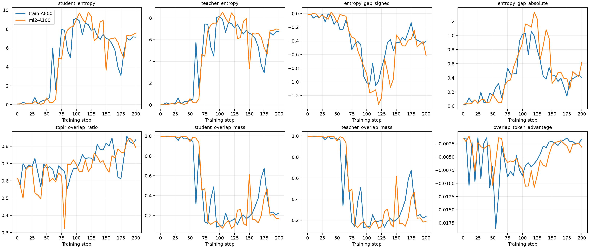
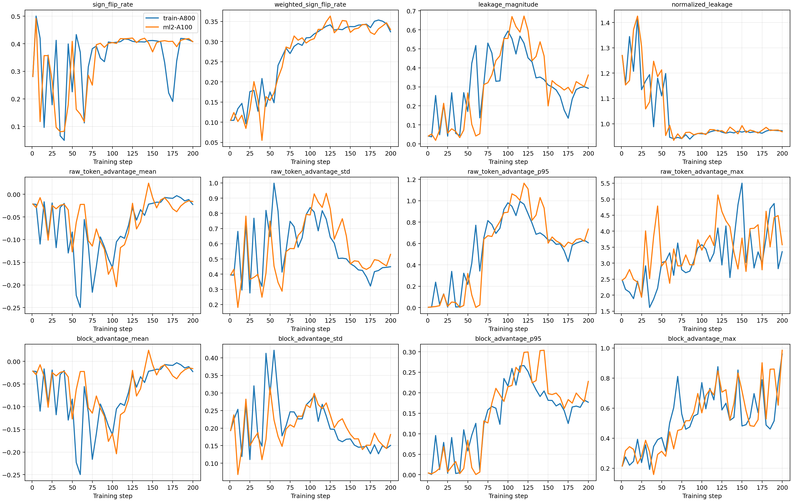
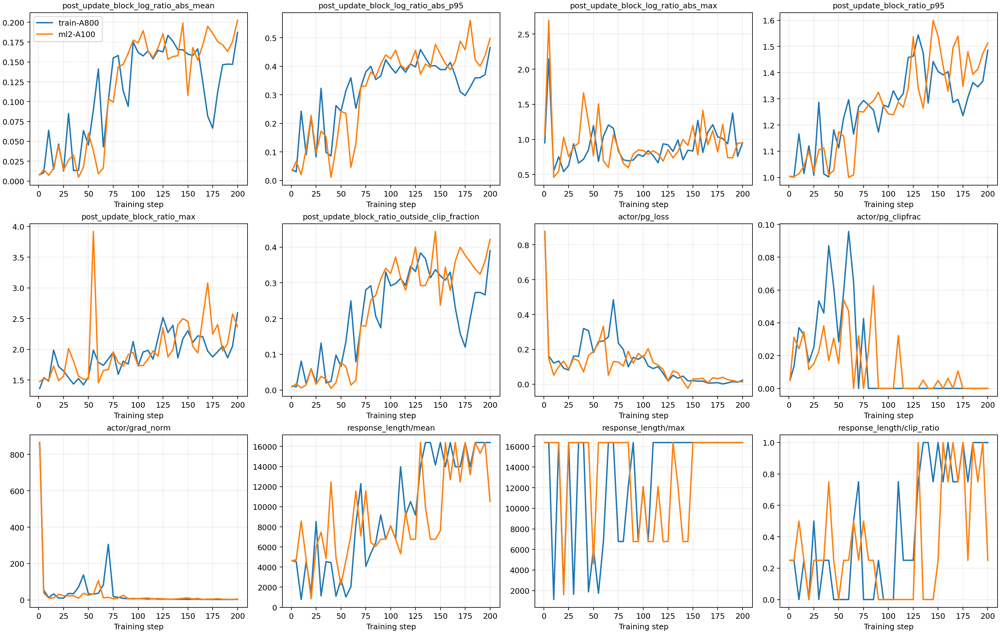
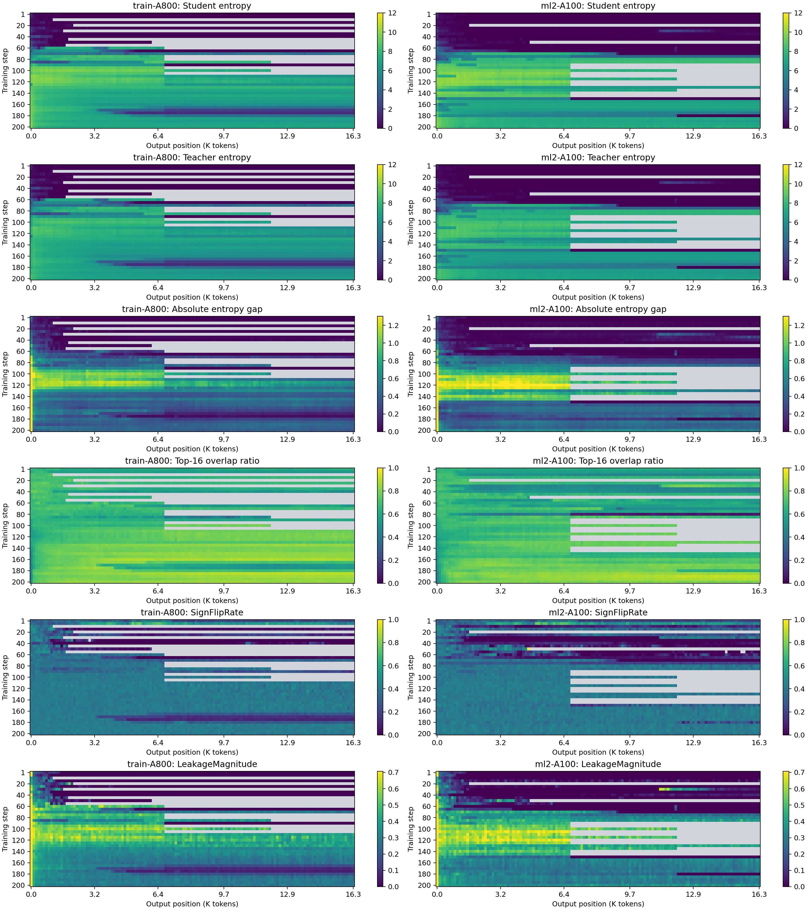
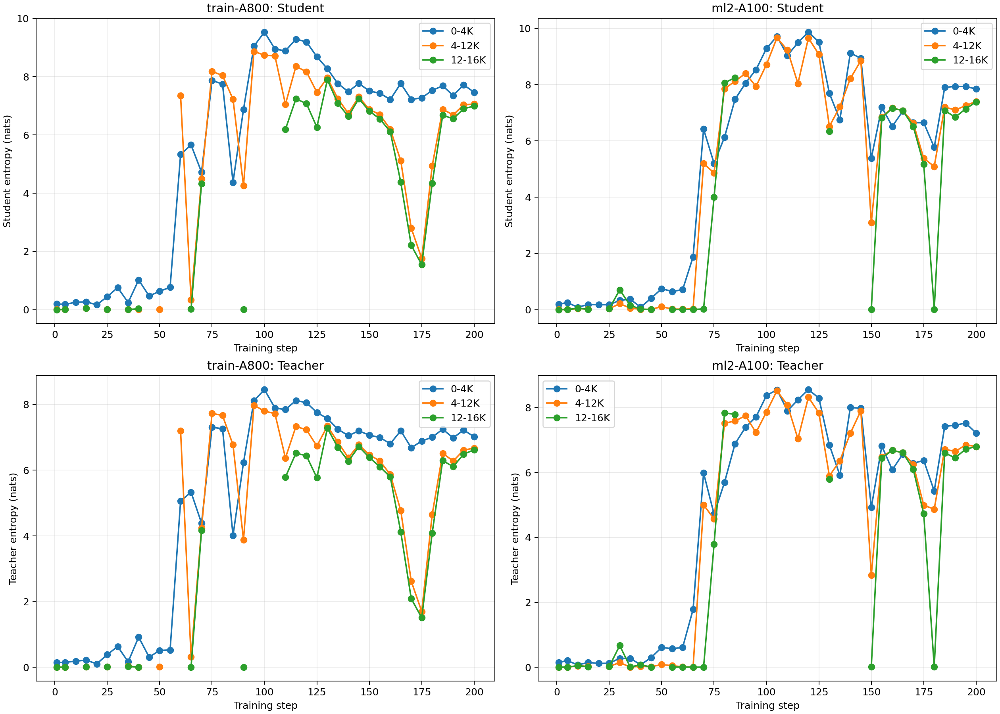

结论先行
我们验证的 Idea
学生仍按自己的策略生成 rollout。但当前代码不只改变 advantage：它同时把连续 10 个 token 视作一个 PPO action，将 teacher-vs-old-student advantage 取 block mean，并将 current/old log-prob 在 block 内求和后构造 block-level importance ratio。
实际训练使用 clipped PPO objective；A<0 时还执行 dual clipping。
最后不足 10 token 的 block 按 nB/10 加权；A<0 时同样 dual clip。它是 sampled block PPO estimator，不是枚举 |V|10 的精确 block KL。
训练与显存配置
这是最终正式 run 的真实配置。它已经在两台机器上跑完，因此不能再把该配置描述为“会 OOM”。
- 训练数据
- DAPO-Math-17K 的 1,791,700-row prompt pool；双机同一 parquet、同一 seed=21。每个共同诊断 step 的 prompt batch SHA-256 完全一致。
- 模型
- Qwen3-1.7B-Base student；Qwen3-4B-Base-GRPO teacher。student 为 Qwen base checkpoint，teacher 为 Rethinking 对齐设定中的 GRPO checkpoint；本实验未使用用户自训练的 Qwen3-MoE checkpoint。
- 采样
- 每 step 4 prompts × 8 rollouts = 32 trajectories；temperature=1.0，top-p=0.9，max prompt=2,048，max response=16,384。
- 优化
- 200 steps，LR=2e-6，PPO mini-batch=32，actor PPO micro-batch/GPU=1，gradient checkpointing 开启。
- Teacher / ref
- ref log-prob micro-batch/GPU=1；参数 offload 开启。rollout log-prob micro-batch/GPU=4。
- vLLM
gpu_memory_utilization=0.6，max_num_batched_tokens=18,432，4 GPUs。0.6 是 KV cache 规划比例，不是整个进程的硬显存上限。- 诊断
- step 1，之后每 5 step；Top-16；position stride=1；完整覆盖 16K 输出位置。保存 step 40/50/60/80/100/200 完整 checkpoint。
没有发生 CUDA OOM
两次正式训练均为 200/200、exit code 0，且完整写出模型、optimizer 和 extra state。所有日志未出现 CUDA out of memory。
退出时的 Killed 告警
训练和 checkpoint 完成后，Ray 清理 DataLoader 子进程时出现 worker ... Killed。这是 shutdown warning，不是训练阶段 OOM，也未影响产物完整性。
完整 Eval 配置
所有 checkpoint 使用同一 evaluator 与 grader，评测不是训练时抽样验证。
- 任务
- Math500（500 题）、AIME 2024（30）、AIME 2025（30）、AMC 2023（83）。
- 每题采样
- n=8；rollout seeds 21–28；temperature=1.0；top-p=0.9；max tokens=16,384；
enable_thinking=false。 - 判分
- Revisiting OPD / VERL math grader；同一 grader SHA。Avg@8 是 8 次采样的平均正确率；Pass@8 是至少一次答对的题目比例。
- Macro
- 四个任务指标的不加权算术平均。Macro Avg@8 衡量单次采样质量；Macro Pass@8 衡量 8 次尝试的覆盖能力。
| Host / checkpoint | Macro Avg@8 | Macro Pass@8 | Math500 Avg@8 | Math500 Pass@8 | Math500 format errors |
|---|---|---|---|---|---|
| train / step 50 | 12.65% | 25.63% | 45.20% | 79.20% | 727 / 4,000 |
| ml2 / step 50 | 11.00% | 27.98% | 37.75% | 78.60% | 1,159 / 4,000 |
| train / step 100 | 0.68% | 4.15% | 2.70% | 16.60% | 3,795 / 4,000 |
| ml2 / step 100 | 0.24% | 1.80% | 0.98% | 7.20% | 3,891 / 4,000 |
| train / step 200 | 0.00% | 0.00% | 0.00% | 0.00% | 4,000 / 4,000 |
| ml2 / step 200 | 0.00% | 0.00% | 0.00% | 0.00% | 4,000 / 4,000 |
异常发生顺序
异常起点使用 step 1–30 的 median/MAD 建立基线，并要求连续两个诊断点越界。5-step 时间分辨率下，两台机器没有得到同一个“最早机制”。
| Host | 最早分类 | Support drift | Student entropy | Block ratio | Weighted sign flip | Normalized leakage | Numerical |
|---|---|---|---|---|---|---|---|
| train / A800 | support drift | 40 | 45 | 55 | 80 | 无持续起点 | 无 |
| ml2 / A100 | block-ratio amplification | 60 | 50 | 50 | 60 | 无持续起点 | 无 |
shared probability mass 较高，输出仍有结构，数值统计有限。
一台先出现 support drift，另一台先出现 block-ratio 异常；此时 step 50 Math500 Pass@8 仍约 79%。
仅有两个 eval 锚点可定位该区间；到 step 100 格式错误接近全覆盖，Macro Avg@8 低于 0.7%。
输出长度频繁落在 6,770 或 16,384 token，文本为高熵多语种词汇拼接。
两个 Block 专用指标
若 token 自己的 At 与 block mean ĀB 异号，则在未考虑 ratio clipping 的局部 credit 视角下，block objective 对该 token 使用了与其自身 teacher 信号相反的符号。按 |At| 加权后，大信号 token 不会被大量小信号稀释。
度量共享 block advantage 相对原 token advantage 的改写幅度。值接近 1 表示 block 信号的总偏移量已接近原始 token 信号总量；它不等价于梯度偏差，也不能单独证明因果。
分布、Credit 与更新曲线
蓝/橙线对应两台机器。跨机器 student entropy、overlap mass、WeightedSignFlipRate 与 block clip fraction 的轨迹高度相关；grad norm 的跨机相关性很低。裁剪前 grad norm 仍出现最高约 867 的有限尖峰，随后被裁剪，因此证据只说明 grad norm 不能单独解释 collapse，不能排除大梯度参与触发。



位置热力图
这里采用与 Rethinking OPD 图 13 相近的“训练 step × 输出位置”表达，但直接监控 student/teacher entropy、entropy gap、Top-16 overlap、SignFlipRate 和 LeakageMagnitude。


Step 200 截面
| Host | Student entropy | Teacher entropy | Student overlap mass | Top-16 overlap | Weighted sign flip | Block |log-ratio| p95 | Block ratio 越界 |
|---|---|---|---|---|---|---|---|
| train / A800 | 7.146 | 6.745 | 0.226 | 0.837 | 0.324 | 0.465 | 39.0% |
| ml2 / A100 | 7.576 | 6.962 | 0.166 | 0.793 | 0.330 | 0.497 | 42.1% |
输出不是简单重复一句话
对 train step 200 日志中可见 response 的非系统抽查，观察到 78K–88K 字符的高熵多语种 lexical word salad，夹杂中英韩词片段，没有可辨认推理链，也没有 \boxed{} 答案。该观察用于描述失败形态，不作为总体统计。
长度集中与内容 collapse 是两层现象
训练日志中多次出现 6,770 或 16,384 token，只能说明停止长度明显集中，尚不足以证明动力系统意义上的 attractor 或 stopping behavior 被锁定。文本内部仍高度随机。
Idea 是否成立
两次 run 共同观察
两机都发生 collapse；没有 OOM 或非有限数值；到 step 100 能力已接近清零；Top-k overlap ratio 单独不足以反映 shared probability mass。
不能过度声称
support drift 与 block-ratio 谁先发生并不跨机器稳定；front-to-tail 也不符合既有论文现象。当前不能声称已找到唯一根因或普适传播方向。
审计与可复现性
| 项目 | 状态 |
|---|---|
| 代码 | af05c071e422fca02c5bbfba3f84277208b83b1e；两机 script/artifact manifest 一致 |
| 训练 | 双机 200/200；exit 0；checkpoint 40/50/60/80/100/200；无自动删除 |
| 诊断 | 41 个预期 step 全部存在；每个共同 step prompt hash 一致 |
| Eval | 双机 step 50/100/200 全部完成；每个 checkpoint 均覆盖 5,144 条 rollout |
| 最终门禁 | 通过；两机 acceptance issues 均为空，跨机器 manifest 校验通过 |